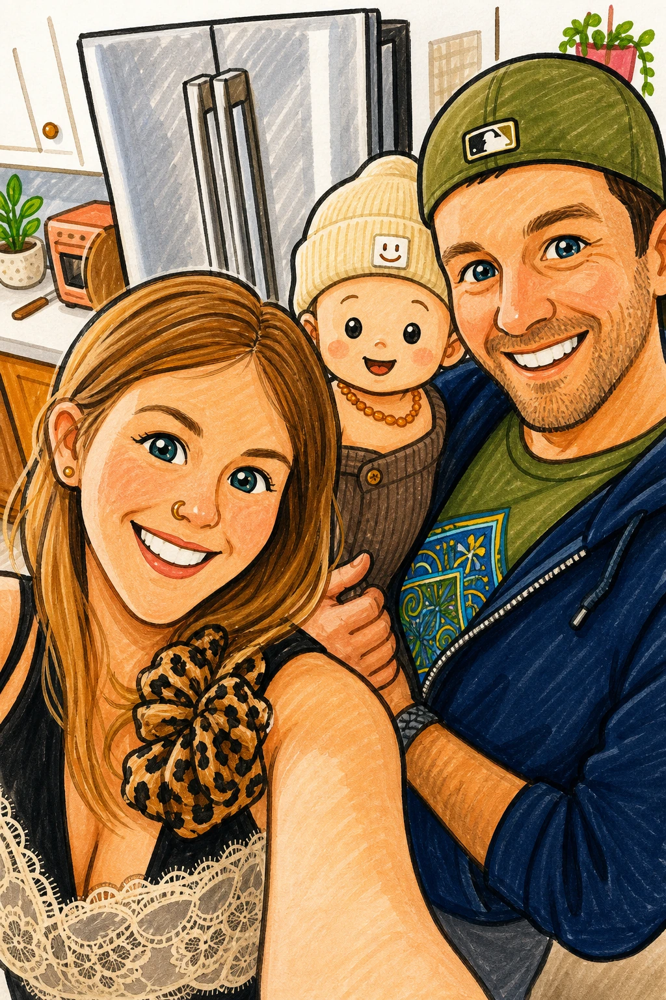

A small marker playground
Daily doodles for bolder marks and brighter ideas.
doodlea.day is made by Robby McCullough, a lifelong doodler, designer, and web guy. This site started as an experiment after he used an AI-generated drawing tutorial of a cowboy hat to make his partner, Tracie, a homemade birthday card.
This site is for marker doodles that turn simple shapes into characters, stickers, badges, bursts, and comic little details. Our sister site sketcha.day is for more detailed and pencil-forward drawing practice.
Robby brings doodle habit, design instincts, and web craft to the lessons. Tracie, a mom and early childhood educator, helps keep the tone welcoming and the steps easy to jump into for kids, parents, teachers, and grown-ups who want a playful creative break.
We hope taking a little break each day to create artwork brings your family as much joy as it's brought ours. See you tomorrow!